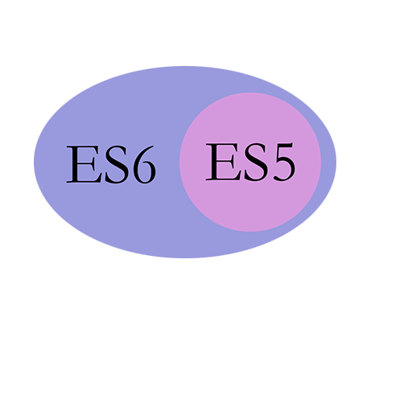

Introduction
第一部分.ES6新特性
1.1 作用域
1.2 箭头函数
1.3 参数处理
1.4 模版字面量
1.5 对象属性加强
1.6 解构赋值
1.7 模块
1.8 Promise
1.9 类
1.10 原有内置对象API增强
1.11 新增数据类型
第二部分.Vue全家桶
2.1 Vue
2.2 Vue-cli
2.3 Vue-router
2.4 Vuex
Published with GitBook
第一部分.ES6新特性
ES6简介
全称ECMAScript 5
发布时间：2015年6月
目标：使JavaScript语言能够编写大型的应用程序，成为企业级开发语言
ES5.1（2011年，只修改了一点点）
ES4（想法太过于激进而夭折）
ES3（1999年，现在js的核心都来自这里）
关系

参考
阮一峰ES6入门
ES6新特性列表
results matching "
"
No results matching "
"